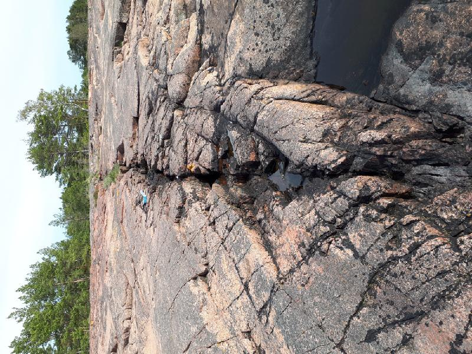

<!DOCTYPE html>
<head>    
    <meta http-equiv="content-type" content="text/html; charset=UTF-8" />
    
        <script>
            L_NO_TOUCH = false;
            L_DISABLE_3D = false;
        </script>
    
    <style>html, body {width: 100%;height: 100%;margin: 0;padding: 0;}</style>
    <style>#map {position:absolute;top:0;bottom:0;right:0;left:0;}</style>
    <script src="https://cdn.jsdelivr.net/npm/leaflet@1.6.0/dist/leaflet.js"></script>
    <script src="https://code.jquery.com/jquery-1.12.4.min.js"></script>
    <script src="https://maxcdn.bootstrapcdn.com/bootstrap/3.2.0/js/bootstrap.min.js"></script>
    <script src="https://cdnjs.cloudflare.com/ajax/libs/Leaflet.awesome-markers/2.0.2/leaflet.awesome-markers.js"></script>
    <link rel="stylesheet" href="https://cdn.jsdelivr.net/npm/leaflet@1.6.0/dist/leaflet.css"/>
    <link rel="stylesheet" href="https://maxcdn.bootstrapcdn.com/bootstrap/3.2.0/css/bootstrap.min.css"/>
    <link rel="stylesheet" href="https://maxcdn.bootstrapcdn.com/bootstrap/3.2.0/css/bootstrap-theme.min.css"/>
    <link rel="stylesheet" href="https://maxcdn.bootstrapcdn.com/font-awesome/4.6.3/css/font-awesome.min.css"/>
    <link rel="stylesheet" href="https://cdnjs.cloudflare.com/ajax/libs/Leaflet.awesome-markers/2.0.2/leaflet.awesome-markers.css"/>
    <link rel="stylesheet" href="https://cdn.jsdelivr.net/gh/python-visualization/folium/folium/templates/leaflet.awesome.rotate.min.css"/>
    
            <meta name="viewport" content="width=device-width,
                initial-scale=1.0, maximum-scale=1.0, user-scalable=no" />
            <style>
                #map_31bfaeeae31b4d4eb91295df136fa1a5 {
                    position: relative;
                    width: 100.0%;
                    height: 100.0%;
                    left: 0.0%;
                    top: 0.0%;
                }
            </style>
        
    <script src="https://cdnjs.cloudflare.com/ajax/libs/leaflet-locatecontrol/0.66.2/L.Control.Locate.min.js"></script>
    <link rel="stylesheet" href="https://cdnjs.cloudflare.com/ajax/libs/leaflet-locatecontrol/0.66.2/L.Control.Locate.min.css"/>
    <link rel="stylesheet" href="styles.css"/>
</head>
<body>    
    
            <div class="folium-map" id="map_31bfaeeae31b4d4eb91295df136fa1a5" ></div>
        
</body>
<script>    
    
            var map_31bfaeeae31b4d4eb91295df136fa1a5 = L.map(
                "map_31bfaeeae31b4d4eb91295df136fa1a5",
                {
                    center: [60.12234632531181, 19.908630268648267],
                    crs: L.CRS.EPSG3857,
                    zoom: 10,
                    zoomControl: true,
                    preferCanvas: false,
                }
            );

            

        
    
            var tile_layer_46610c40f9584c36b4fe46754f88bdac = L.tileLayer(
                "https://{s}.tile.openstreetmap.org/{z}/{x}/{y}.png",
                {"attribution": "Data by \u0026copy; \u003ca href=\"http://openstreetmap.org\"\u003eOpenStreetMap\u003c/a\u003e, under \u003ca href=\"http://www.openstreetmap.org/copyright\"\u003eODbL\u003c/a\u003e.", "detectRetina": false, "maxNativeZoom": 18, "maxZoom": 18, "minZoom": 0, "noWrap": false, "opacity": 1, "subdomains": "abc", "tms": false}
            ).addTo(map_31bfaeeae31b4d4eb91295df136fa1a5);
        
    
            var marker_8947f238863148578b9c23ba8b289200 = L.marker(
                [60.05250053945929, 20.315122408792377],
                {}
            ).addTo(map_31bfaeeae31b4d4eb91295df136fa1a5);
        
    
            var icon_e4c796e76ca14afc91c40becfdf81b2b = L.AwesomeMarkers.icon(
                {"extraClasses": "fa-rotate-0", "icon": "glyphicon-stop", "iconColor": "white", "markerColor": "lightgray", "prefix": "glyphicon"}
            );
            marker_8947f238863148578b9c23ba8b289200.setIcon(icon_e4c796e76ca14afc91c40becfdf81b2b);
        
    
        var popup_8b23b594958d49b2b67cb156ef9c1d96 = L.popup({"maxWidth": "100%"});

        
            var html_92b217b7f10e43349699da94d3f153cc = $(`<div id="html_92b217b7f10e43349699da94d3f153cc" style="width: 100.0%; height: 100.0%;"><h3>JENG-2020-36</h3> <h4>Planar Structures</h4> <table> <thead> <tr> <th align="right">DIP</th> <th align="right">DIRECTION_OF_DIP</th> <th align="left">STYPE_TEXT</th> <th align="left">FOL_TYPE_TEXT</th> <th align="right">STYPE</th> </tr> </thead> <tbody> <tr> <td align="right">75</td> <td align="right">356</td> <td align="left">Fault</td> <td align="left"></td> <td align="right">4</td> </tr> </tbody> </table> <h4></h4> <h4></h4> <h4></h4> <h4></h4> <h4>Observation remarks</h4> <p>Major fault with no clear movement. Still it is big enough so that clearly can be recognised.</p> <h4>Images</h4></div>`)[0];
            popup_8b23b594958d49b2b67cb156ef9c1d96.setContent(html_92b217b7f10e43349699da94d3f153cc);
        

        marker_8947f238863148578b9c23ba8b289200.bindPopup(popup_8b23b594958d49b2b67cb156ef9c1d96)
        ;

        
    
    
            marker_8947f238863148578b9c23ba8b289200.bindTooltip(
                `<div>
                     JENG-2020-36
                 </div>`,
                {"sticky": true}
            );
        
    
            var marker_bf8d886954cb4adab16f051cd78dbfa8 = L.marker(
                [60.05112687125802, 20.316994171589613],
                {}
            ).addTo(map_31bfaeeae31b4d4eb91295df136fa1a5);
        
    
            var icon_8bc30a98e08548d784b15cd7d3dfb954 = L.AwesomeMarkers.icon(
                {"extraClasses": "fa-rotate-0", "icon": "glyphicon-stop", "iconColor": "white", "markerColor": "lightgray", "prefix": "glyphicon"}
            );
            marker_bf8d886954cb4adab16f051cd78dbfa8.setIcon(icon_8bc30a98e08548d784b15cd7d3dfb954);
        
    
        var popup_1f5b77924a664756a35487883541fd21 = L.popup({"maxWidth": "100%"});

        
            var html_ab3926aea30e451a9739e2a119e09774 = $(`<div id="html_ab3926aea30e451a9739e2a119e09774" style="width: 100.0%; height: 100.0%;"><h3>JENG-2020-37</h3> <h4>Planar Structures</h4> <table> <thead> <tr> <th align="right">DIP</th> <th align="right">DIRECTION_OF_DIP</th> <th align="left">STYPE_TEXT</th> <th align="left">FOL_TYPE_TEXT</th> <th align="right">STYPE</th> </tr> </thead> <tbody> <tr> <td align="right">82</td> <td align="right">347</td> <td align="left">Fault</td> <td align="left"></td> <td align="right">4</td> </tr> <tr> <td align="right">74</td> <td align="right">17</td> <td align="left">Fault</td> <td align="left"></td> <td align="right">4</td> </tr> </tbody> </table> <h4></h4> <h4></h4> <h4></h4> <h4></h4> <h4>Observation remarks</h4> <p>A minor fault with dextral displacement. Secondary fracturing indicating dextral sense.</p> <h4>Images</h4></div>`)[0];
            popup_1f5b77924a664756a35487883541fd21.setContent(html_ab3926aea30e451a9739e2a119e09774);
        

        marker_bf8d886954cb4adab16f051cd78dbfa8.bindPopup(popup_1f5b77924a664756a35487883541fd21)
        ;

        
    
    
            marker_bf8d886954cb4adab16f051cd78dbfa8.bindTooltip(
                `<div>
                     JENG-2020-37
                 </div>`,
                {"sticky": true}
            );
        
    
            var marker_fe31af3cec4143d9b79dd1e73e4d0c42 = L.marker(
                [60.05083480384201, 20.31750898808241],
                {}
            ).addTo(map_31bfaeeae31b4d4eb91295df136fa1a5);
        
    
            var icon_fa5b4562ccc24f999f7f325b84eac2a8 = L.AwesomeMarkers.icon(
                {"extraClasses": "fa-rotate-0", "icon": "glyphicon-stop", "iconColor": "white", "markerColor": "lightgray", "prefix": "glyphicon"}
            );
            marker_fe31af3cec4143d9b79dd1e73e4d0c42.setIcon(icon_fa5b4562ccc24f999f7f325b84eac2a8);
        
    
        var popup_f0c0dd29851f42e29268d9b5dc49bc38 = L.popup({"maxWidth": "100%"});

        
            var html_7e19b7795f3d48a0b9be21463f589806 = $(`<div id="html_7e19b7795f3d48a0b9be21463f589806" style="width: 100.0%; height: 100.0%;"><h3>JENG-2020-38</h3> <h4>Planar Structures</h4> <table> <thead> <tr> <th align="right">DIP</th> <th align="right">DIRECTION_OF_DIP</th> <th align="left">STYPE_TEXT</th> <th align="left">FOL_TYPE_TEXT</th> <th align="right">STYPE</th> </tr> </thead> <tbody> <tr> <td align="right">82</td> <td align="right">350</td> <td align="left">Fault</td> <td align="left"></td> <td align="right">4</td> </tr> <tr> <td align="right">72</td> <td align="right">95</td> <td align="left">Fault</td> <td align="left"></td> <td align="right">4</td> </tr> </tbody> </table> <h4></h4> <h4></h4> <h4></h4> <h4></h4> <h4>Observation remarks</h4> <p>Major fault with dextral steps indicating dextral displacement. Appearance is different from other faults with steps and some quartz as fracture filling. Other measurement is a fault with more quartz filling.</p> <h4>Images</h4></div>`)[0];
            popup_f0c0dd29851f42e29268d9b5dc49bc38.setContent(html_7e19b7795f3d48a0b9be21463f589806);
        

        marker_fe31af3cec4143d9b79dd1e73e4d0c42.bindPopup(popup_f0c0dd29851f42e29268d9b5dc49bc38)
        ;

        
    
    
            marker_fe31af3cec4143d9b79dd1e73e4d0c42.bindTooltip(
                `<div>
                     JENG-2020-38
                 </div>`,
                {"sticky": true}
            );
        
    
            var marker_6ba3f138ca45458a902074f64ff084c0 = L.marker(
                [60.05039383191615, 20.318730734288692],
                {}
            ).addTo(map_31bfaeeae31b4d4eb91295df136fa1a5);
        
    
            var icon_e04fc35d22ef4d50a120d6b7f02f77e0 = L.AwesomeMarkers.icon(
                {"extraClasses": "fa-rotate-0", "icon": "glyphicon-stop", "iconColor": "white", "markerColor": "lightgray", "prefix": "glyphicon"}
            );
            marker_6ba3f138ca45458a902074f64ff084c0.setIcon(icon_e04fc35d22ef4d50a120d6b7f02f77e0);
        
    
        var popup_2ffa429ab66f4163ae28843e03526cde = L.popup({"maxWidth": "100%"});

        
            var html_de4975be65ca4f1396a0a0dffc09ddff = $(`<div id="html_de4975be65ca4f1396a0a0dffc09ddff" style="width: 100.0%; height: 100.0%;"><h3>JENG-2020-39</h3> <h4>Planar Structures</h4> <table> <thead> <tr> <th align="right">DIP</th> <th align="right">DIRECTION_OF_DIP</th> <th align="left">STYPE_TEXT</th> <th align="left">FOL_TYPE_TEXT</th> <th align="right">STYPE</th> </tr> </thead> <tbody> <tr> <td align="right">83</td> <td align="right">334</td> <td align="left">Fault</td> <td align="left"></td> <td align="right">4</td> </tr> <tr> <td align="right">78</td> <td align="right">201</td> <td align="left">Fault</td> <td align="left"></td> <td align="right">4</td> </tr> </tbody> </table> <h4></h4> <h4></h4> <h4></h4> <h4></h4> <h4>Observation remarks</h4> <p>Dextral fault with the end of fault appearing here at this location. Having a display of the end of the fault and some wingcracks.</p> <h4>Images</h4></div>`)[0];
            popup_2ffa429ab66f4163ae28843e03526cde.setContent(html_de4975be65ca4f1396a0a0dffc09ddff);
        

        marker_6ba3f138ca45458a902074f64ff084c0.bindPopup(popup_2ffa429ab66f4163ae28843e03526cde)
        ;

        
    
    
            marker_6ba3f138ca45458a902074f64ff084c0.bindTooltip(
                `<div>
                     JENG-2020-39
                 </div>`,
                {"sticky": true}
            );
        
    
            var marker_ad56e74ba0a74ccc85eeb531251177cf = L.marker(
                [60.06931912153959, 20.32519326545298],
                {}
            ).addTo(map_31bfaeeae31b4d4eb91295df136fa1a5);
        
    
            var icon_2e29d7d7154f4885ab8c9bcec73f1512 = L.AwesomeMarkers.icon(
                {"extraClasses": "fa-rotate-0", "icon": "glyphicon-stop", "iconColor": "white", "markerColor": "lightgray", "prefix": "glyphicon"}
            );
            marker_ad56e74ba0a74ccc85eeb531251177cf.setIcon(icon_2e29d7d7154f4885ab8c9bcec73f1512);
        
    
        var popup_ff7e33aa4ad94307b6f7a6e8e5c3575d = L.popup({"maxWidth": "100%"});

        
            var html_53b3657ca0254bf2a365d63bee4e5ea4 = $(`<div id="html_53b3657ca0254bf2a365d63bee4e5ea4" style="width: 100.0%; height: 100.0%;"><h3>JENG-2020-42</h3> <h4>Planar Structures</h4> <table> <thead> <tr> <th align="right">DIP</th> <th align="right">DIRECTION_OF_DIP</th> <th align="left">STYPE_TEXT</th> <th align="left">FOL_TYPE_TEXT</th> <th align="right">STYPE</th> </tr> </thead> <tbody> <tr> <td align="right">88</td> <td align="right">167</td> <td align="left">Fault</td> <td align="left"></td> <td align="right">4</td> </tr> </tbody> </table> <h4></h4> <h4></h4> <h4></h4> <h4></h4> <h4>Observation remarks</h4> <p>A fault or major fracture. No clear kinematics.</p> <h4>Images</h4></div>`)[0];
            popup_ff7e33aa4ad94307b6f7a6e8e5c3575d.setContent(html_53b3657ca0254bf2a365d63bee4e5ea4);
        

        marker_ad56e74ba0a74ccc85eeb531251177cf.bindPopup(popup_ff7e33aa4ad94307b6f7a6e8e5c3575d)
        ;

        
    
    
            marker_ad56e74ba0a74ccc85eeb531251177cf.bindTooltip(
                `<div>
                     JENG-2020-42
                 </div>`,
                {"sticky": true}
            );
        
    
            var marker_3b3e1951943848c6b48ee82c449f0d3a = L.marker(
                [60.066672074608505, 20.273912446573377],
                {}
            ).addTo(map_31bfaeeae31b4d4eb91295df136fa1a5);
        
    
            var icon_08479d93c8cb4aeebc3b7692208fee0e = L.AwesomeMarkers.icon(
                {"extraClasses": "fa-rotate-0", "icon": "glyphicon-stop", "iconColor": "white", "markerColor": "lightgray", "prefix": "glyphicon"}
            );
            marker_3b3e1951943848c6b48ee82c449f0d3a.setIcon(icon_08479d93c8cb4aeebc3b7692208fee0e);
        
    
        var popup_9c7bc8917c3e4cdb93201977caa03206 = L.popup({"maxWidth": "100%"});

        
            var html_91d121a2cc0f4e45af6d282b2ecffee3 = $(`<div id="html_91d121a2cc0f4e45af6d282b2ecffee3" style="width: 100.0%; height: 100.0%;"><h3>JENG-2020-43</h3> <h4>Planar Structures</h4> <table> <thead> <tr> <th align="right">DIP</th> <th align="right">DIRECTION_OF_DIP</th> <th align="left">STYPE_TEXT</th> <th align="left">FOL_TYPE_TEXT</th> <th align="right">STYPE</th> </tr> </thead> <tbody> <tr> <td align="right">84</td> <td align="right">175</td> <td align="left">Fault</td> <td align="left"></td> <td align="right">4</td> </tr> </tbody> </table> <h4></h4> <h4></h4> <h4></h4> <h4></h4> <h4>Observation remarks</h4> <p>Major fault with no clear fault sense. But a lot of hydrothermal alteration and also quartz filling.</p> <h4>Images</h4></div>`)[0];
            popup_9c7bc8917c3e4cdb93201977caa03206.setContent(html_91d121a2cc0f4e45af6d282b2ecffee3);
        

        marker_3b3e1951943848c6b48ee82c449f0d3a.bindPopup(popup_9c7bc8917c3e4cdb93201977caa03206)
        ;

        
    
    
            marker_3b3e1951943848c6b48ee82c449f0d3a.bindTooltip(
                `<div>
                     JENG-2020-43
                 </div>`,
                {"sticky": true}
            );
        
    
            var marker_61e07e5bd6ce4bd3ae63673894be56a1 = L.marker(
                [60.06712712813169, 20.27342151850462],
                {}
            ).addTo(map_31bfaeeae31b4d4eb91295df136fa1a5);
        
    
            var icon_d20d8e9ab71f484d9fe10676f1449ab4 = L.AwesomeMarkers.icon(
                {"extraClasses": "fa-rotate-0", "icon": "glyphicon-stop", "iconColor": "white", "markerColor": "lightgray", "prefix": "glyphicon"}
            );
            marker_61e07e5bd6ce4bd3ae63673894be56a1.setIcon(icon_d20d8e9ab71f484d9fe10676f1449ab4);
        
    
        var popup_e2e240b496e2486aa0ccdb57bc9a7dcb = L.popup({"maxWidth": "100%"});

        
            var html_612f116e7e304404849de1530a572e50 = $(`<div id="html_612f116e7e304404849de1530a572e50" style="width: 100.0%; height: 100.0%;"><h3>JENG-2020-44</h3> <h4>Planar Structures</h4> <table> <thead> <tr> <th align="right">DIP</th> <th align="right">DIRECTION_OF_DIP</th> <th align="left">STYPE_TEXT</th> <th align="left">FOL_TYPE_TEXT</th> <th align="right">STYPE</th> </tr> </thead> <tbody> <tr> <td align="right">84</td> <td align="right">85</td> <td align="left">Fault</td> <td align="left"></td> <td align="right">4</td> </tr> <tr> <td align="right">90</td> <td align="right">78</td> <td align="left">Fault</td> <td align="left"></td> <td align="right">4</td> </tr> </tbody> </table> <h4></h4> <h4></h4> <h4></h4> <h4></h4> <h4>Observation remarks</h4> <p>Two N-S trending faults or fractures with no clear movement. </p> <h4>Images</h4></div>`)[0];
            popup_e2e240b496e2486aa0ccdb57bc9a7dcb.setContent(html_612f116e7e304404849de1530a572e50);
        

        marker_61e07e5bd6ce4bd3ae63673894be56a1.bindPopup(popup_e2e240b496e2486aa0ccdb57bc9a7dcb)
        ;

        
    
    
            marker_61e07e5bd6ce4bd3ae63673894be56a1.bindTooltip(
                `<div>
                     JENG-2020-44
                 </div>`,
                {"sticky": true}
            );
        
    
            var marker_5262448e9ace4f7e895757fab00b7f9b = L.marker(
                [59.99116738792509, 20.29854920692742],
                {}
            ).addTo(map_31bfaeeae31b4d4eb91295df136fa1a5);
        
    
            var icon_5161a747bfa446e28b25bb9212ad4d3a = L.AwesomeMarkers.icon(
                {"extraClasses": "fa-rotate-0", "icon": "glyphicon-stop", "iconColor": "white", "markerColor": "lightgray", "prefix": "glyphicon"}
            );
            marker_5262448e9ace4f7e895757fab00b7f9b.setIcon(icon_5161a747bfa446e28b25bb9212ad4d3a);
        
    
        var popup_ee1657e2c75f465a90e51507ac6949f9 = L.popup({"maxWidth": "100%"});

        
            var html_7a011c8a7cf74ca58340d313314a98fd = $(`<div id="html_7a011c8a7cf74ca58340d313314a98fd" style="width: 100.0%; height: 100.0%;"><h3>JENG-2020-45</h3> <h4>Planar Structures</h4> <table> <thead> <tr> <th align="right">DIP</th> <th align="right">DIRECTION_OF_DIP</th> <th align="left">STYPE_TEXT</th> <th align="left">FOL_TYPE_TEXT</th> <th align="right">STYPE</th> </tr> </thead> <tbody> <tr> <td align="right">75</td> <td align="right">222</td> <td align="left">Foliation</td> <td align="left">Gneissic banding</td> <td align="right">2</td> </tr> <tr> <td align="right">72</td> <td align="right">204</td> <td align="left">Foliation</td> <td align="left">Gneissic banding</td> <td align="right">2</td> </tr> <tr> <td align="right">81</td> <td align="right">206</td> <td align="left">Foliation</td> <td align="left">Gneissic banding</td> <td align="right">2</td> </tr> <tr> <td align="right">68</td> <td align="right">219</td> <td align="left">Fault</td> <td align="left"></td> <td align="right">4</td> </tr> </tbody> </table> <h4></h4> <h4></h4> <h4></h4> <h4></h4> <h4>Observation remarks</h4> <p>Migmatitic quartzdiorite with some inclusions of amphibolite. The rock is distorted and locally also sheared. Fault is a fracture.</p> <h4>Images</h4></div>`)[0];
            popup_ee1657e2c75f465a90e51507ac6949f9.setContent(html_7a011c8a7cf74ca58340d313314a98fd);
        

        marker_5262448e9ace4f7e895757fab00b7f9b.bindPopup(popup_ee1657e2c75f465a90e51507ac6949f9)
        ;

        
    
    
            marker_5262448e9ace4f7e895757fab00b7f9b.bindTooltip(
                `<div>
                     JENG-2020-45
                 </div>`,
                {"sticky": true}
            );
        
    
            var marker_e50d007202a04d05ba47cfba070e542c = L.marker(
                [59.99423202127218, 20.299926856532693],
                {}
            ).addTo(map_31bfaeeae31b4d4eb91295df136fa1a5);
        
    
            var icon_f0d2cba97c18458e9943780591665e89 = L.AwesomeMarkers.icon(
                {"extraClasses": "fa-rotate-0", "icon": "glyphicon-stop", "iconColor": "white", "markerColor": "lightgray", "prefix": "glyphicon"}
            );
            marker_e50d007202a04d05ba47cfba070e542c.setIcon(icon_f0d2cba97c18458e9943780591665e89);
        
    
        var popup_b6121954a04449a6bba20f41c77f2fa0 = L.popup({"maxWidth": "100%"});

        
            var html_975c3e2fd4fb4072afbd270e5127ca43 = $(`<div id="html_975c3e2fd4fb4072afbd270e5127ca43" style="width: 100.0%; height: 100.0%;"><h3>JENG-2020-47</h3> <h4>Planar Structures</h4> <table> <thead> <tr> <th align="right">DIP</th> <th align="right">DIRECTION_OF_DIP</th> <th align="left">STYPE_TEXT</th> <th align="left">FOL_TYPE_TEXT</th> <th align="right">STYPE</th> </tr> </thead> <tbody> <tr> <td align="right">77</td> <td align="right">210</td> <td align="left">Foliation</td> <td align="left">Gneissic banding</td> <td align="right">2</td> </tr> </tbody> </table> <h4></h4> <h4></h4> <h4></h4> <h4></h4> <h4>Observation remarks</h4> <p>Contact between Rapakivi and Quartzdiorite. The quartzdiorite is homogenous and no migmatitic appearance.</p> <h4>Images</h4></div>`)[0];
            popup_b6121954a04449a6bba20f41c77f2fa0.setContent(html_975c3e2fd4fb4072afbd270e5127ca43);
        

        marker_e50d007202a04d05ba47cfba070e542c.bindPopup(popup_b6121954a04449a6bba20f41c77f2fa0)
        ;

        
    
    
            marker_e50d007202a04d05ba47cfba070e542c.bindTooltip(
                `<div>
                     JENG-2020-47
                 </div>`,
                {"sticky": true}
            );
        
    
            var marker_592fd2c073424d2d951e6c76667bedd7 = L.marker(
                [59.99860674608499, 20.295450082048777],
                {}
            ).addTo(map_31bfaeeae31b4d4eb91295df136fa1a5);
        
    
            var icon_7d6a84475fd94295b772d69d91efaf38 = L.AwesomeMarkers.icon(
                {"extraClasses": "fa-rotate-0", "icon": "glyphicon-stop", "iconColor": "white", "markerColor": "lightgray", "prefix": "glyphicon"}
            );
            marker_592fd2c073424d2d951e6c76667bedd7.setIcon(icon_7d6a84475fd94295b772d69d91efaf38);
        
    
        var popup_1c8da0c189784fa098aa59b75a88f7ac = L.popup({"maxWidth": "100%"});

        
            var html_3c316f563c424ceb9398345ba804c137 = $(`<div id="html_3c316f563c424ceb9398345ba804c137" style="width: 100.0%; height: 100.0%;"><h3>JENG-2020-49</h3> <h4>Planar Structures</h4> <table> <thead> <tr> <th align="right">DIP</th> <th align="right">DIRECTION_OF_DIP</th> <th align="left">STYPE_TEXT</th> <th align="left">FOL_TYPE_TEXT</th> <th align="right">STYPE</th> </tr> </thead> <tbody> <tr> <td align="right">90</td> <td align="right">115</td> <td align="left">Fault</td> <td align="left"></td> <td align="right">4</td> </tr> </tbody> </table> <h4></h4> <h4></h4> <h4></h4> <h4></h4> <h4>Observation remarks</h4> <p>Quartz vein similar to other nearby, but different orientation.</p> <h4>Images</h4></div>`)[0];
            popup_1c8da0c189784fa098aa59b75a88f7ac.setContent(html_3c316f563c424ceb9398345ba804c137);
        

        marker_592fd2c073424d2d951e6c76667bedd7.bindPopup(popup_1c8da0c189784fa098aa59b75a88f7ac)
        ;

        
    
    
            marker_592fd2c073424d2d951e6c76667bedd7.bindTooltip(
                `<div>
                     JENG-2020-49
                 </div>`,
                {"sticky": true}
            );
        
    
            var marker_f744377c73d34411a68a25d4515847eb = L.marker(
                [59.99871747102589, 20.295214466750625],
                {}
            ).addTo(map_31bfaeeae31b4d4eb91295df136fa1a5);
        
    
            var icon_4cbe1c38110e414dbc43b4c5d0faea1a = L.AwesomeMarkers.icon(
                {"extraClasses": "fa-rotate-0", "icon": "glyphicon-stop", "iconColor": "white", "markerColor": "lightgray", "prefix": "glyphicon"}
            );
            marker_f744377c73d34411a68a25d4515847eb.setIcon(icon_4cbe1c38110e414dbc43b4c5d0faea1a);
        
    
        var popup_e0335ae20aea4297a96a1104be393b01 = L.popup({"maxWidth": "100%"});

        
            var html_6462d10da61640f287d0a90ba3c04b34 = $(`<div id="html_6462d10da61640f287d0a90ba3c04b34" style="width: 100.0%; height: 100.0%;"><h3>JENG-2020-50</h3> <h4>Planar Structures</h4> <table> <thead> <tr> <th align="right">DIP</th> <th align="right">DIRECTION_OF_DIP</th> <th align="left">STYPE_TEXT</th> <th align="left">FOL_TYPE_TEXT</th> <th align="right">STYPE</th> </tr> </thead> <tbody> <tr> <td align="right">81</td> <td align="right">155</td> <td align="left">Fault</td> <td align="left"></td> <td align="right">4</td> </tr> <tr> <td align="right">90</td> <td align="right">300</td> <td align="left">Fault</td> <td align="left"></td> <td align="right">4</td> </tr> <tr> <td align="right">85</td> <td align="right">308</td> <td align="left">Fault</td> <td align="left"></td> <td align="right">4</td> </tr> </tbody> </table> <h4></h4> <h4></h4> <h4></h4> <h4></h4> <h4>Observation remarks</h4> <p>Quartz fault with sinistral sense of shear and pseudotachylyte. Also several other veins and faults. </p> <h4>Images</h4></div>`)[0];
            popup_e0335ae20aea4297a96a1104be393b01.setContent(html_6462d10da61640f287d0a90ba3c04b34);
        

        marker_f744377c73d34411a68a25d4515847eb.bindPopup(popup_e0335ae20aea4297a96a1104be393b01)
        ;

        
    
    
            marker_f744377c73d34411a68a25d4515847eb.bindTooltip(
                `<div>
                     JENG-2020-50
                 </div>`,
                {"sticky": true}
            );
        
    
            var marker_1c16fe1727194358a55339851dc37f26 = L.marker(
                [59.998874673619866, 20.29490073211491],
                {}
            ).addTo(map_31bfaeeae31b4d4eb91295df136fa1a5);
        
    
            var icon_b44e883931864379af96e1eb7f55e772 = L.AwesomeMarkers.icon(
                {"extraClasses": "fa-rotate-22", "icon": "glyphicon-arrow-up", "iconColor": "white", "markerColor": "blue", "prefix": "glyphicon"}
            );
            marker_1c16fe1727194358a55339851dc37f26.setIcon(icon_b44e883931864379af96e1eb7f55e772);
        
    
        var popup_8d889b848782496983815cfc039622b9 = L.popup({"maxWidth": "100%"});

        
            var html_a7d242bd07714cf28f063c14b3347e9a = $(`<div id="html_a7d242bd07714cf28f063c14b3347e9a" style="width: 100.0%; height: 100.0%;"><h3>JENG-2020-51</h3> <h4>Planar Structures</h4> <table> <thead> <tr> <th align="right">DIP</th> <th align="right">DIRECTION_OF_DIP</th> <th align="left">STYPE_TEXT</th> <th align="left">FOL_TYPE_TEXT</th> <th align="right">STYPE</th> </tr> </thead> <tbody> <tr> <td align="right">89</td> <td align="right">15</td> <td align="left">Fault</td> <td align="left"></td> <td align="right">4</td> </tr> <tr> <td align="right">80</td> <td align="right">335</td> <td align="left">Fault</td> <td align="left"></td> <td align="right">4</td> </tr> <tr> <td align="right">88</td> <td align="right">320</td> <td align="left">Fault</td> <td align="left"></td> <td align="right">4</td> </tr> <tr> <td align="right">85</td> <td align="right">17</td> <td align="left">Fault</td> <td align="left"></td> <td align="right">4</td> </tr> </tbody> </table> <h4>Linear Structures</h4> <table> <thead> <tr> <th align="right">DIRECTION</th> <th align="right">PLUNGE</th> <th align="left">STYPE_TEXT</th> <th align="right">STYPE</th> </tr> </thead> <tbody> <tr> <td align="right">22</td> <td align="right">7</td> <td align="left">Lineation</td> <td align="right">2</td> </tr> </tbody> </table> <h4></h4> <h4></h4> <h4></h4> <h4>Observation remarks</h4> <p>Major fault with sinistral sense of shear. The fault has quartz as filling and a other mineral with orange streak. The secondary measurements are wing-cracks. Fault 85/017 with slickenside lineation.</p> <h4>Images</h4></div>`)[0];
            popup_8d889b848782496983815cfc039622b9.setContent(html_a7d242bd07714cf28f063c14b3347e9a);
        

        marker_1c16fe1727194358a55339851dc37f26.bindPopup(popup_8d889b848782496983815cfc039622b9)
        ;

        
    
    
            marker_1c16fe1727194358a55339851dc37f26.bindTooltip(
                `<div>
                     JENG-2020-51
                 </div>`,
                {"sticky": true}
            );
        
    
            var marker_963a09c53e53414d9bd801e26a56b904 = L.marker(
                [60.0257932394743, 20.009082024917006],
                {}
            ).addTo(map_31bfaeeae31b4d4eb91295df136fa1a5);
        
    
            var icon_9c2b6ea3709840418b11113c61ec814e = L.AwesomeMarkers.icon(
                {"extraClasses": "fa-rotate-0", "icon": "glyphicon-stop", "iconColor": "white", "markerColor": "lightgray", "prefix": "glyphicon"}
            );
            marker_963a09c53e53414d9bd801e26a56b904.setIcon(icon_9c2b6ea3709840418b11113c61ec814e);
        
    
        var popup_60084968df724d86b88a56d13292ab9e = L.popup({"maxWidth": "100%"});

        
            var html_23edf5895ea44e8d8caab015c4deea09 = $(`<div id="html_23edf5895ea44e8d8caab015c4deea09" style="width: 100.0%; height: 100.0%;"><h3>JENG-2021-2</h3> <h4>Planar Structures</h4> <table> <thead> <tr> <th align="right">DIP</th> <th align="right">DIRECTION_OF_DIP</th> <th align="left">STYPE_TEXT</th> <th align="left">FOL_TYPE_TEXT</th> <th align="right">STYPE</th> </tr> </thead> <tbody> <tr> <td align="right">76</td> <td align="right">72</td> <td align="left">Fault</td> <td align="left"></td> <td align="right">4</td> </tr> <tr> <td align="right">82</td> <td align="right">128</td> <td align="left">Fault</td> <td align="left"></td> <td align="right">4</td> </tr> <tr> <td align="right">82</td> <td align="right">133</td> <td align="left">Fault</td> <td align="left"></td> <td align="right">4</td> </tr> </tbody> </table> <h4></h4> <h4></h4> <h4></h4> <h4></h4> <h4>Observation remarks</h4> <p>Rocktype old granitic. Measurements 2-3 are secondary fracturing.</p> <h4>Images</h4> <p><a href="kapalo_imgs/JENG-2021-2.k1@3081831509957488170.jpg"></a></p> <p><em>Fault from above.</em></p></div>`)[0];
            popup_60084968df724d86b88a56d13292ab9e.setContent(html_23edf5895ea44e8d8caab015c4deea09);
        

        marker_963a09c53e53414d9bd801e26a56b904.bindPopup(popup_60084968df724d86b88a56d13292ab9e)
        ;

        
    
    
            marker_963a09c53e53414d9bd801e26a56b904.bindTooltip(
                `<div>
                     JENG-2021-2
                 </div>`,
                {"sticky": true}
            );
        
    
            var marker_1fccfc2ab3f248a58b8ca69cf289655c = L.marker(
                [60.22590505890548, 19.68289129436016],
                {}
            ).addTo(map_31bfaeeae31b4d4eb91295df136fa1a5);
        
    
            var icon_5814c375f086452699a124e7598facd5 = L.AwesomeMarkers.icon(
                {"extraClasses": "fa-rotate-0", "icon": "glyphicon-stop", "iconColor": "white", "markerColor": "lightgray", "prefix": "glyphicon"}
            );
            marker_1fccfc2ab3f248a58b8ca69cf289655c.setIcon(icon_5814c375f086452699a124e7598facd5);
        
    
        var popup_2fc5bc7c197044999b8993f24cb3b51d = L.popup({"maxWidth": "100%"});

        
            var html_a9f9bb6916f24cc59e1e55d5aa5f055f = $(`<div id="html_a9f9bb6916f24cc59e1e55d5aa5f055f" style="width: 100.0%; height: 100.0%;"><h3>JENG-2021-3</h3> <h4>Planar Structures</h4> <table> <thead> <tr> <th align="right">DIP</th> <th align="right">DIRECTION_OF_DIP</th> <th align="left">STYPE_TEXT</th> <th align="left">FOL_TYPE_TEXT</th> <th align="right">STYPE</th> </tr> </thead> <tbody> <tr> <td align="right">87</td> <td align="right">190</td> <td align="left">Fault</td> <td align="left"></td> <td align="right">4</td> </tr> <tr> <td align="right">88</td> <td align="right">349</td> <td align="left">Fault</td> <td align="left"></td> <td align="right">4</td> </tr> <tr> <td align="right">83</td> <td align="right">158</td> <td align="left">Fault</td> <td align="left"></td> <td align="right">4</td> </tr> <tr> <td align="right">79</td> <td align="right">189</td> <td align="left">Fault</td> <td align="left"></td> <td align="right">4</td> </tr> <tr> <td align="right">81</td> <td align="right">202</td> <td align="left">Fault</td> <td align="left"></td> <td align="right">4</td> </tr> <tr> <td align="right">86</td> <td align="right">240</td> <td align="left">Fault</td> <td align="left"></td> <td align="right">4</td> </tr> </tbody> </table> <h4></h4> <h4></h4> <h4></h4> <h4></h4> <h4>Observation remarks</h4> <p>Rapakivi with sinistral hydrothermal fault. Measurements from W to E on outcrop. Classical step-over between to sinistral faults. Also a ~N-S fault last measurement.</p> <h4>Images</h4></div>`)[0];
            popup_2fc5bc7c197044999b8993f24cb3b51d.setContent(html_a9f9bb6916f24cc59e1e55d5aa5f055f);
        

        marker_1fccfc2ab3f248a58b8ca69cf289655c.bindPopup(popup_2fc5bc7c197044999b8993f24cb3b51d)
        ;

        
    
    
            marker_1fccfc2ab3f248a58b8ca69cf289655c.bindTooltip(
                `<div>
                     JENG-2021-3
                 </div>`,
                {"sticky": true}
            );
        
    
            var marker_1d283ec9a5f84ce49a7143556db13690 = L.marker(
                [60.232625543139875, 19.5356635004282],
                {}
            ).addTo(map_31bfaeeae31b4d4eb91295df136fa1a5);
        
    
            var icon_05fa79679c48499b9e56459785d08a34 = L.AwesomeMarkers.icon(
                {"extraClasses": "fa-rotate-0", "icon": "glyphicon-stop", "iconColor": "white", "markerColor": "lightgray", "prefix": "glyphicon"}
            );
            marker_1d283ec9a5f84ce49a7143556db13690.setIcon(icon_05fa79679c48499b9e56459785d08a34);
        
    
        var popup_c2e87d971c5549438fa4bcc98913851f = L.popup({"maxWidth": "100%"});

        
            var html_b6ae672ca9024358bdb43ed6f10b0b15 = $(`<div id="html_b6ae672ca9024358bdb43ed6f10b0b15" style="width: 100.0%; height: 100.0%;"><h3>JENG-2021-4</h3> <h4>Planar Structures</h4> <table> <thead> <tr> <th align="right">DIP</th> <th align="right">DIRECTION_OF_DIP</th> <th align="left">STYPE_TEXT</th> <th align="left">FOL_TYPE_TEXT</th> <th align="right">STYPE</th> </tr> </thead> <tbody> <tr> <td align="right">73</td> <td align="right">337</td> <td align="left">Fault</td> <td align="left"></td> <td align="right">4</td> </tr> <tr> <td align="right">84</td> <td align="right">297</td> <td align="left">Fault</td> <td align="left"></td> <td align="right">4</td> </tr> <tr> <td align="right">76</td> <td align="right">295</td> <td align="left">Fault</td> <td align="left"></td> <td align="right">4</td> </tr> </tbody> </table> <h4></h4> <h4></h4> <h4></h4> <h4></h4> <h4>Observation remarks</h4> <p>Rapakivi E-W fault. Uncertain kinematics, but extensional fractures seem to indicate sinistral movement.</p> <h4>Images</h4> <p><a href="kapalo_imgs/JENG-2021-4.k1@83604549515010682.jpg"></a></p> <p><em>Photo along fault towards E.</em></p></div>`)[0];
            popup_c2e87d971c5549438fa4bcc98913851f.setContent(html_b6ae672ca9024358bdb43ed6f10b0b15);
        

        marker_1d283ec9a5f84ce49a7143556db13690.bindPopup(popup_c2e87d971c5549438fa4bcc98913851f)
        ;

        
    
    
            marker_1d283ec9a5f84ce49a7143556db13690.bindTooltip(
                `<div>
                     JENG-2021-4
                 </div>`,
                {"sticky": true}
            );
        
    
            var marker_481e497b8fd84675b6994fe7caeceeb9 = L.marker(
                [60.23110192269087, 19.536603866145015],
                {}
            ).addTo(map_31bfaeeae31b4d4eb91295df136fa1a5);
        
    
            var icon_679c78f950124637bd29f3c94ff23fb8 = L.AwesomeMarkers.icon(
                {"extraClasses": "fa-rotate-0", "icon": "glyphicon-stop", "iconColor": "white", "markerColor": "lightgray", "prefix": "glyphicon"}
            );
            marker_481e497b8fd84675b6994fe7caeceeb9.setIcon(icon_679c78f950124637bd29f3c94ff23fb8);
        
    
        var popup_45bb6178b1664690934ffc73c59fdff7 = L.popup({"maxWidth": "100%"});

        
            var html_6879f5899b874cc9862abdcefea6faf3 = $(`<div id="html_6879f5899b874cc9862abdcefea6faf3" style="width: 100.0%; height: 100.0%;"><h3>JENG-2021-5</h3> <h4>Planar Structures</h4> <table> <thead> <tr> <th align="right">DIP</th> <th align="right">DIRECTION_OF_DIP</th> <th align="left">STYPE_TEXT</th> <th align="left">FOL_TYPE_TEXT</th> <th align="right">STYPE</th> </tr> </thead> <tbody> <tr> <td align="right">83</td> <td align="right">144</td> <td align="left">Fault</td> <td align="left"></td> <td align="right">4</td> </tr> <tr> <td align="right">85</td> <td align="right">189</td> <td align="left">Fault</td> <td align="left"></td> <td align="right">4</td> </tr> <tr> <td align="right">89</td> <td align="right">351</td> <td align="left">Fault</td> <td align="left"></td> <td align="right">4</td> </tr> </tbody> </table> <h4></h4> <h4></h4> <h4></h4> <h4></h4> <h4>Observation remarks</h4> <p>NE-SW orientated fault in Rapakivi. Clear hydrothermal alteration with quartz filling in fault. Measurements 2-3 are extensional fracturing.</p> <h4>Images</h4> <p><a href="kapalo_imgs/JENG-2021-5.k1@6661866512202191482.jpg"></a></p> <p><em>Main fault</em> <a href="kapalo_imgs/JENG-2021-5.k2@799533466720694217.jpg"></a></p> <p><em>Along fault towards NE</em></p></div>`)[0];
            popup_45bb6178b1664690934ffc73c59fdff7.setContent(html_6879f5899b874cc9862abdcefea6faf3);
        

        marker_481e497b8fd84675b6994fe7caeceeb9.bindPopup(popup_45bb6178b1664690934ffc73c59fdff7)
        ;

        
    
    
            marker_481e497b8fd84675b6994fe7caeceeb9.bindTooltip(
                `<div>
                     JENG-2021-5
                 </div>`,
                {"sticky": true}
            );
        
    
            var marker_d888c78a2fd44dbca25d40a69bea0534 = L.marker(
                [60.25046508293599, 19.522160841152072],
                {}
            ).addTo(map_31bfaeeae31b4d4eb91295df136fa1a5);
        
    
            var icon_6d083fcfaa28419d974ae331a0d75d89 = L.AwesomeMarkers.icon(
                {"extraClasses": "fa-rotate-0", "icon": "glyphicon-stop", "iconColor": "white", "markerColor": "lightgray", "prefix": "glyphicon"}
            );
            marker_d888c78a2fd44dbca25d40a69bea0534.setIcon(icon_6d083fcfaa28419d974ae331a0d75d89);
        
    
        var popup_9612b85e38684b9e851a97926869f79b = L.popup({"maxWidth": "100%"});

        
            var html_8e2eb0841963410087c0834ca5e739a5 = $(`<div id="html_8e2eb0841963410087c0834ca5e739a5" style="width: 100.0%; height: 100.0%;"><h3>JENG-2021-6</h3> <h4>Planar Structures</h4> <table> <thead> <tr> <th align="right">DIP</th> <th align="right">DIRECTION_OF_DIP</th> <th align="left">STYPE_TEXT</th> <th align="left">FOL_TYPE_TEXT</th> <th align="right">STYPE</th> </tr> </thead> <tbody> <tr> <td align="right">88</td> <td align="right">145</td> <td align="left">Fault</td> <td align="left"></td> <td align="right">4</td> </tr> <tr> <td align="right">87</td> <td align="right">321</td> <td align="left">Fault</td> <td align="left"></td> <td align="right">4</td> </tr> <tr> <td align="right">89</td> <td align="right">180</td> <td align="left">Fault</td> <td align="left"></td> <td align="right">4</td> </tr> <tr> <td align="right">89</td> <td align="right">333</td> <td align="left">Fault</td> <td align="left"></td> <td align="right">4</td> </tr> <tr> <td align="right">88</td> <td align="right">12</td> <td align="left">Fault</td> <td align="left"></td> <td align="right">4</td> </tr> <tr> <td align="right">89</td> <td align="right">356</td> <td align="left">Fault</td> <td align="left"></td> <td align="right">4</td> </tr> <tr> <td align="right">89</td> <td align="right">141</td> <td align="left">Fault</td> <td align="left"></td> <td align="right">4</td> </tr> </tbody> </table> <h4></h4> <h4></h4> <h4></h4> <h4></h4> <h4>Observation remarks</h4> <p>Rapakivi with severe hydrothermal faults and fractures. Main fault orientation NE-SW. The fault have fault breccia and quartz. Main fault  possibly dextral. The last fault #7 is displacing fault #6.</p> <h4>Images</h4> <p><a href="kapalo_imgs/JENG-2021-6.k1@8857327056242677147.jpg"></a></p> <p><em>Main fault</em> <a href="kapalo_imgs/JENG-2021-6.k2@3923352744239319103.jpg"></a></p> <p><em>Main fault</em></p> <p><a href="kapalo_imgs/JENG-2021-6.k3@8782151536614645799.jpg">('Fault #6 &amp; #7', 'JENG-2021-6.k3')</a></p> <p><a href="kapalo_imgs/JENG-2021-6.k4@8018021332290025911.jpg">('Step-over ', 'JENG-2021-6.k4')</a></p></div>`)[0];
            popup_9612b85e38684b9e851a97926869f79b.setContent(html_8e2eb0841963410087c0834ca5e739a5);
        

        marker_d888c78a2fd44dbca25d40a69bea0534.bindPopup(popup_9612b85e38684b9e851a97926869f79b)
        ;

        
    
    
            marker_d888c78a2fd44dbca25d40a69bea0534.bindTooltip(
                `<div>
                     JENG-2021-6
                 </div>`,
                {"sticky": true}
            );
        
    
            var marker_0a624dfc18a9401b9386f7ad7e09e4f4 = L.marker(
                [60.22963001858443, 19.536126852035522],
                {}
            ).addTo(map_31bfaeeae31b4d4eb91295df136fa1a5);
        
    
            var icon_9d7ea95cae544e238816f8ef836573fd = L.AwesomeMarkers.icon(
                {"extraClasses": "fa-rotate-0", "icon": "glyphicon-stop", "iconColor": "white", "markerColor": "lightgray", "prefix": "glyphicon"}
            );
            marker_0a624dfc18a9401b9386f7ad7e09e4f4.setIcon(icon_9d7ea95cae544e238816f8ef836573fd);
        
    
        var popup_ecacac089fc246aea08f04f3a8eac033 = L.popup({"maxWidth": "100%"});

        
            var html_53fb6b9ecdfd4f9cbe90b84c37d2637c = $(`<div id="html_53fb6b9ecdfd4f9cbe90b84c37d2637c" style="width: 100.0%; height: 100.0%;"><h3>JENG-2021-7</h3> <h4>Planar Structures</h4> <table> <thead> <tr> <th align="right">DIP</th> <th align="right">DIRECTION_OF_DIP</th> <th align="left">STYPE_TEXT</th> <th align="left">FOL_TYPE_TEXT</th> <th align="right">STYPE</th> </tr> </thead> <tbody> <tr> <td align="right">88</td> <td align="right">326</td> <td align="left">Fault</td> <td align="left"></td> <td align="right">4</td> </tr> <tr> <td align="right">84</td> <td align="right">358</td> <td align="left">Fault</td> <td align="left"></td> <td align="right">4</td> </tr> <tr> <td align="right">81</td> <td align="right">2</td> <td align="left">Fault</td> <td align="left"></td> <td align="right">4</td> </tr> </tbody> </table> <h4></h4> <h4></h4> <h4></h4> <h4></h4> <h4>Observation remarks</h4> <p>Rapakivi with dextral fault with classical step-over.</p> <h4>Images</h4> <p><a href="kapalo_imgs/JENG-2021-7.k1@4876781378486370637.jpg"></a></p> <p><em>Näin fault and step-over dextral.</em></p></div>`)[0];
            popup_ecacac089fc246aea08f04f3a8eac033.setContent(html_53fb6b9ecdfd4f9cbe90b84c37d2637c);
        

        marker_0a624dfc18a9401b9386f7ad7e09e4f4.bindPopup(popup_ecacac089fc246aea08f04f3a8eac033)
        ;

        
    
    
            marker_0a624dfc18a9401b9386f7ad7e09e4f4.bindTooltip(
                `<div>
                     JENG-2021-7
                 </div>`,
                {"sticky": true}
            );
        
    
            var marker_0a34f9dd1ae64fdabeea49bcdb15ddd1 = L.marker(
                [60.22857712581754, 19.534468157216907],
                {}
            ).addTo(map_31bfaeeae31b4d4eb91295df136fa1a5);
        
    
            var icon_fc1b4e6b27a4408cbd9b634542f72f7b = L.AwesomeMarkers.icon(
                {"extraClasses": "fa-rotate-0", "icon": "glyphicon-stop", "iconColor": "white", "markerColor": "lightgray", "prefix": "glyphicon"}
            );
            marker_0a34f9dd1ae64fdabeea49bcdb15ddd1.setIcon(icon_fc1b4e6b27a4408cbd9b634542f72f7b);
        
    
        var popup_e367ab2a3007457eae04b104c72ccdd2 = L.popup({"maxWidth": "100%"});

        
            var html_5423d2dd05b64a96bb0a778d657fde83 = $(`<div id="html_5423d2dd05b64a96bb0a778d657fde83" style="width: 100.0%; height: 100.0%;"><h3>JENG-2021-8</h3> <h4>Planar Structures</h4> <table> <thead> <tr> <th align="right">DIP</th> <th align="right">DIRECTION_OF_DIP</th> <th align="left">STYPE_TEXT</th> <th align="left">FOL_TYPE_TEXT</th> <th align="right">STYPE</th> </tr> </thead> <tbody> <tr> <td align="right">89</td> <td align="right">26</td> <td align="left">Fault</td> <td align="left"></td> <td align="right">4</td> </tr> <tr> <td align="right">89</td> <td align="right">237</td> <td align="left">Fault</td> <td align="left"></td> <td align="right">4</td> </tr> <tr> <td align="right">88</td> <td align="right">62</td> <td align="left">Fault</td> <td align="left"></td> <td align="right">4</td> </tr> </tbody> </table> <h4></h4> <h4></h4> <h4></h4> <h4></h4> <h4>Observation remarks</h4> <p>Classical dextral fault with some hydrothermal alteration.</p> <h4>Images</h4> <p><a href="kapalo_imgs/JENG-2021-8.k1@624841673750049480.jpg"></a></p> <p><em>Along fault towards SE</em> <a href="kapalo_imgs/JENG-2021-8.k2@6261782221383283929.jpg"></a></p> <p><em>Along fault towards SE</em></p></div>`)[0];
            popup_e367ab2a3007457eae04b104c72ccdd2.setContent(html_5423d2dd05b64a96bb0a778d657fde83);
        

        marker_0a34f9dd1ae64fdabeea49bcdb15ddd1.bindPopup(popup_e367ab2a3007457eae04b104c72ccdd2)
        ;

        
    
    
            marker_0a34f9dd1ae64fdabeea49bcdb15ddd1.bindTooltip(
                `<div>
                     JENG-2021-8
                 </div>`,
                {"sticky": true}
            );
        
    
            var marker_8648bf33ff5745ed845878b3afc1b44e = L.marker(
                [60.2282620081678, 19.53459095209837],
                {}
            ).addTo(map_31bfaeeae31b4d4eb91295df136fa1a5);
        
    
            var icon_aac8cc8e15bc47b39b0f1f7d5d1abbf3 = L.AwesomeMarkers.icon(
                {"extraClasses": "fa-rotate-0", "icon": "glyphicon-stop", "iconColor": "white", "markerColor": "lightgray", "prefix": "glyphicon"}
            );
            marker_8648bf33ff5745ed845878b3afc1b44e.setIcon(icon_aac8cc8e15bc47b39b0f1f7d5d1abbf3);
        
    
        var popup_7e1b20259c034e4a992e7c4ce8301900 = L.popup({"maxWidth": "100%"});

        
            var html_3849eb4574474afea502c89eedebacdb = $(`<div id="html_3849eb4574474afea502c89eedebacdb" style="width: 100.0%; height: 100.0%;"><h3>JENG-2021-9</h3> <h4>Planar Structures</h4> <table> <thead> <tr> <th align="right">DIP</th> <th align="right">DIRECTION_OF_DIP</th> <th align="left">STYPE_TEXT</th> <th align="left">FOL_TYPE_TEXT</th> <th align="right">STYPE</th> </tr> </thead> <tbody> <tr> <td align="right">87</td> <td align="right">126</td> <td align="left">Fault</td> <td align="left"></td> <td align="right">4</td> </tr> <tr> <td align="right">89</td> <td align="right">331</td> <td align="left">Fault</td> <td align="left"></td> <td align="right">4</td> </tr> <tr> <td align="right">88</td> <td align="right">139</td> <td align="left">Fault</td> <td align="left"></td> <td align="right">4</td> </tr> <tr> <td align="right">86</td> <td align="right">328</td> <td align="left">Fault</td> <td align="left"></td> <td align="right">4</td> </tr> </tbody> </table> <h4></h4> <h4></h4> <h4></h4> <h4></h4> <h4>Observation remarks</h4> <p>Several hydrothermal faults with distinct alteration halo.</p> <h4>Images</h4> <p><a href="kapalo_imgs/JENG-2021-9.k1@4655809258233919522.jpg"></a></p> <p><em>Most eastern fault</em></p></div>`)[0];
            popup_7e1b20259c034e4a992e7c4ce8301900.setContent(html_3849eb4574474afea502c89eedebacdb);
        

        marker_8648bf33ff5745ed845878b3afc1b44e.bindPopup(popup_7e1b20259c034e4a992e7c4ce8301900)
        ;

        
    
    
            marker_8648bf33ff5745ed845878b3afc1b44e.bindTooltip(
                `<div>
                     JENG-2021-9
                 </div>`,
                {"sticky": true}
            );
        
    
            var marker_6fead730d2014c7ab6d5adb9ef998862 = L.marker(
                [60.164454518817365, 19.789619743824005],
                {}
            ).addTo(map_31bfaeeae31b4d4eb91295df136fa1a5);
        
    
            var icon_f4b51bf912da424d9535b68768fb2885 = L.AwesomeMarkers.icon(
                {"extraClasses": "fa-rotate-23", "icon": "glyphicon-arrow-up", "iconColor": "white", "markerColor": "blue", "prefix": "glyphicon"}
            );
            marker_6fead730d2014c7ab6d5adb9ef998862.setIcon(icon_f4b51bf912da424d9535b68768fb2885);
        
    
        var popup_656d95edcdf24db5ab4560f1e73e7f47 = L.popup({"maxWidth": "100%"});

        
            var html_f2c3378493734c8b9227f4ca52411f97 = $(`<div id="html_f2c3378493734c8b9227f4ca52411f97" style="width: 100.0%; height: 100.0%;"><h3>JENG-2021-10</h3> <h4>Planar Structures</h4> <table> <thead> <tr> <th align="right">DIP</th> <th align="right">DIRECTION_OF_DIP</th> <th align="left">STYPE_TEXT</th> <th align="left">FOL_TYPE_TEXT</th> <th align="right">STYPE</th> </tr> </thead> <tbody> <tr> <td align="right">83</td> <td align="right">297</td> <td align="left">Fault</td> <td align="left"></td> <td align="right">4</td> </tr> </tbody> </table> <h4>Linear Structures</h4> <table> <thead> <tr> <th align="right">DIRECTION</th> <th align="right">PLUNGE</th> <th align="left">STYPE_TEXT</th> <th align="right">STYPE</th> </tr> </thead> <tbody> <tr> <td align="right">23</td> <td align="right">5</td> <td align="left">Lineation</td> <td align="right">2</td> </tr> </tbody> </table> <h4></h4> <h4></h4> <h4></h4> <h4>Observation remarks</h4> <p>Dextral fault with distinct fault gouge and clay almost 10 cm thick. An excellent location for sample.</p> <h4>Images</h4> <p><a href="kapalo_imgs/JENG-2021-10.k1@4749691382803194223.jpg"></a></p> <p><em>Along fault towards NE</em></p></div>`)[0];
            popup_656d95edcdf24db5ab4560f1e73e7f47.setContent(html_f2c3378493734c8b9227f4ca52411f97);
        

        marker_6fead730d2014c7ab6d5adb9ef998862.bindPopup(popup_656d95edcdf24db5ab4560f1e73e7f47)
        ;

        
    
    
            marker_6fead730d2014c7ab6d5adb9ef998862.bindTooltip(
                `<div>
                     JENG-2021-10
                 </div>`,
                {"sticky": true}
            );
        
    
            var marker_398d5fab97c84c84999d643e54a45ba7 = L.marker(
                [60.16569797415286, 19.789319252595305],
                {}
            ).addTo(map_31bfaeeae31b4d4eb91295df136fa1a5);
        
    
            var icon_383dcc5e98764f17880efc47e93f5996 = L.AwesomeMarkers.icon(
                {"extraClasses": "fa-rotate-212", "icon": "glyphicon-arrow-up", "iconColor": "white", "markerColor": "blue", "prefix": "glyphicon"}
            );
            marker_398d5fab97c84c84999d643e54a45ba7.setIcon(icon_383dcc5e98764f17880efc47e93f5996);
        
    
        var popup_00031a19b7ae492bb6b1a49e861bd4cf = L.popup({"maxWidth": "100%"});

        
            var html_4ae94625859e43d6811eb337eb9baf01 = $(`<div id="html_4ae94625859e43d6811eb337eb9baf01" style="width: 100.0%; height: 100.0%;"><h3>JENG-2021-11</h3> <h4>Planar Structures</h4> <table> <thead> <tr> <th align="right">DIP</th> <th align="right">DIRECTION_OF_DIP</th> <th align="left">STYPE_TEXT</th> <th align="left">FOL_TYPE_TEXT</th> <th align="right">STYPE</th> </tr> </thead> <tbody> <tr> <td align="right">88</td> <td align="right">306</td> <td align="left">Fault</td> <td align="left"></td> <td align="right">4</td> </tr> </tbody> </table> <h4>Linear Structures</h4> <table> <thead> <tr> <th align="right">DIRECTION</th> <th align="right">PLUNGE</th> <th align="left">STYPE_TEXT</th> <th align="right">STYPE</th> </tr> </thead> <tbody> <tr> <td align="right">212</td> <td align="right">11</td> <td align="left">Lineation</td> <td align="right">2</td> </tr> </tbody> </table> <h4></h4> <h4></h4> <h4></h4> <h4>Observation remarks</h4> <p>Dextral fault with clay and fault gouge. The core of fault is approximately 4 cm. Sample is possible to take here. Lineation a bit uncertain.</p> <h4>Images</h4> <p><a href="kapalo_imgs/JENG-2021-11.k1@4747641618665199994.jpg"></a></p> <p><em>Along fault towards NE.</em></p></div>`)[0];
            popup_00031a19b7ae492bb6b1a49e861bd4cf.setContent(html_4ae94625859e43d6811eb337eb9baf01);
        

        marker_398d5fab97c84c84999d643e54a45ba7.bindPopup(popup_00031a19b7ae492bb6b1a49e861bd4cf)
        ;

        
    
    
            marker_398d5fab97c84c84999d643e54a45ba7.bindTooltip(
                `<div>
                     JENG-2021-11
                 </div>`,
                {"sticky": true}
            );
        
    
            var marker_f26ff602611f4e37937461bcb0b7d10b = L.marker(
                [60.241896766237915, 19.536772845312953],
                {}
            ).addTo(map_31bfaeeae31b4d4eb91295df136fa1a5);
        
    
            var icon_6650f4cf0eb44bc1909b857dcaf5c6e4 = L.AwesomeMarkers.icon(
                {"extraClasses": "fa-rotate-26", "icon": "glyphicon-arrow-up", "iconColor": "white", "markerColor": "blue", "prefix": "glyphicon"}
            );
            marker_f26ff602611f4e37937461bcb0b7d10b.setIcon(icon_6650f4cf0eb44bc1909b857dcaf5c6e4);
        
    
        var popup_e25d86da7075468c81786cb60209367a = L.popup({"maxWidth": "100%"});

        
            var html_3a5eb763a55d432c99052abb6c6299d7 = $(`<div id="html_3a5eb763a55d432c99052abb6c6299d7" style="width: 100.0%; height: 100.0%;"><h3>JENG-2021-12</h3> <h4>Planar Structures</h4> <table> <thead> <tr> <th align="right">DIP</th> <th align="right">DIRECTION_OF_DIP</th> <th align="left">STYPE_TEXT</th> <th align="left">FOL_TYPE_TEXT</th> <th align="right">STYPE</th> </tr> </thead> <tbody> <tr> <td align="right">85</td> <td align="right">296</td> <td align="left">Fault</td> <td align="left"></td> <td align="right">4</td> </tr> <tr> <td align="right">76</td> <td align="right">70</td> <td align="left">Fault</td> <td align="left"></td> <td align="right">4</td> </tr> <tr> <td align="right">79</td> <td align="right">64</td> <td align="left">Fault</td> <td align="left"></td> <td align="right">4</td> </tr> <tr> <td align="right">89</td> <td align="right">300</td> <td align="left">Fault</td> <td align="left"></td> <td align="right">4</td> </tr> </tbody> </table> <h4>Linear Structures</h4> <table> <thead> <tr> <th align="right">DIRECTION</th> <th align="right">PLUNGE</th> <th align="left">STYPE_TEXT</th> <th align="right">STYPE</th> </tr> </thead> <tbody> <tr> <td align="right">26</td> <td align="right">2</td> <td align="left">Lineation</td> <td align="right">2</td> </tr> </tbody> </table> <h4></h4> <h4></h4> <h4></h4> <h4>Observation remarks</h4> <p>Rapakivi with fault and sinistral step-over. The main fault first measurement and lineation on that surface.</p> <h4>Images</h4> <p><a href="kapalo_imgs/JENG-2021-12.k1@7423904233544270154.jpg"></a></p> <p><em>Fault towards NE.</em></p></div>`)[0];
            popup_e25d86da7075468c81786cb60209367a.setContent(html_3a5eb763a55d432c99052abb6c6299d7);
        

        marker_f26ff602611f4e37937461bcb0b7d10b.bindPopup(popup_e25d86da7075468c81786cb60209367a)
        ;

        
    
    
            marker_f26ff602611f4e37937461bcb0b7d10b.bindTooltip(
                `<div>
                     JENG-2021-12
                 </div>`,
                {"sticky": true}
            );
        
    
            var marker_7e42ab9c0b4a41a6bc36e5d39fd02e60 = L.marker(
                [60.24152632802725, 19.536798913031816],
                {}
            ).addTo(map_31bfaeeae31b4d4eb91295df136fa1a5);
        
    
            var icon_a52c3a3d7a88481babc784e689b1712e = L.AwesomeMarkers.icon(
                {"extraClasses": "fa-rotate-4", "icon": "glyphicon-arrow-up", "iconColor": "white", "markerColor": "blue", "prefix": "glyphicon"}
            );
            marker_7e42ab9c0b4a41a6bc36e5d39fd02e60.setIcon(icon_a52c3a3d7a88481babc784e689b1712e);
        
    
        var popup_f3cd57663f5f4ca99f5f9fe8b5579bf4 = L.popup({"maxWidth": "100%"});

        
            var html_d87061f32863450bae20a2e9a807cfb7 = $(`<div id="html_d87061f32863450bae20a2e9a807cfb7" style="width: 100.0%; height: 100.0%;"><h3>JENG-2021-13</h3> <h4>Planar Structures</h4> <table> <thead> <tr> <th align="right">DIP</th> <th align="right">DIRECTION_OF_DIP</th> <th align="left">STYPE_TEXT</th> <th align="left">FOL_TYPE_TEXT</th> <th align="right">STYPE</th> </tr> </thead> <tbody> <tr> <td align="right">89</td> <td align="right">281</td> <td align="left">Fault</td> <td align="left"></td> <td align="right">4</td> </tr> <tr> <td align="right">84</td> <td align="right">37</td> <td align="left">Fault</td> <td align="left"></td> <td align="right">4</td> </tr> <tr> <td align="right">51</td> <td align="right">179</td> <td align="left">Fault</td> <td align="left"></td> <td align="right">4</td> </tr> <tr> <td align="right">79</td> <td align="right">11</td> <td align="left">Fault</td> <td align="left"></td> <td align="right">4</td> </tr> </tbody> </table> <h4>Linear Structures</h4> <table> <thead> <tr> <th align="right">DIRECTION</th> <th align="right">PLUNGE</th> <th align="left">STYPE_TEXT</th> <th align="right">STYPE</th> </tr> </thead> <tbody> <tr> <td align="right">4</td> <td align="right">1</td> <td align="left">Lineation</td> <td align="right">2</td> </tr> </tbody> </table> <h4></h4> <h4></h4> <h4></h4> <h4>Observation remarks</h4> <p>Rapakivi with sinistral faults and hydrothermal alteration. First measurement is main fault with lineation. Second fault contains step-over sinistral.</p> <h4>Images</h4> <p><a href="kapalo_imgs/JENG-2021-13.k1@3109818707872926507.jpg"></a></p> <p><em>Sinistral step-over.</em> <a href="kapalo_imgs/JENG-2021-13.k2@3011340726871970815.jpg"></a></p> <p><em>Lineation on fault #1</em></p></div>`)[0];
            popup_f3cd57663f5f4ca99f5f9fe8b5579bf4.setContent(html_d87061f32863450bae20a2e9a807cfb7);
        

        marker_7e42ab9c0b4a41a6bc36e5d39fd02e60.bindPopup(popup_f3cd57663f5f4ca99f5f9fe8b5579bf4)
        ;

        
    
    
            marker_7e42ab9c0b4a41a6bc36e5d39fd02e60.bindTooltip(
                `<div>
                     JENG-2021-13
                 </div>`,
                {"sticky": true}
            );
        
    
            var marker_7aae7765d5e84cebbeb8341a3c86c631 = L.marker(
                [60.24201151449233, 19.536236906424165],
                {}
            ).addTo(map_31bfaeeae31b4d4eb91295df136fa1a5);
        
    
            var icon_6577d171249b443b8422bc34eb4fc380 = L.AwesomeMarkers.icon(
                {"extraClasses": "fa-rotate-0", "icon": "glyphicon-stop", "iconColor": "white", "markerColor": "lightgray", "prefix": "glyphicon"}
            );
            marker_7aae7765d5e84cebbeb8341a3c86c631.setIcon(icon_6577d171249b443b8422bc34eb4fc380);
        
    
        var popup_def58361114c4f199024d03be4b25bcb = L.popup({"maxWidth": "100%"});

        
            var html_be490e503fc446fa98f2cc23677d71ba = $(`<div id="html_be490e503fc446fa98f2cc23677d71ba" style="width: 100.0%; height: 100.0%;"><h3>JENG-2021-14</h3> <h4>Planar Structures</h4> <table> <thead> <tr> <th align="right">DIP</th> <th align="right">DIRECTION_OF_DIP</th> <th align="left">STYPE_TEXT</th> <th align="left">FOL_TYPE_TEXT</th> <th align="right">STYPE</th> </tr> </thead> <tbody> <tr> <td align="right">86</td> <td align="right">32</td> <td align="left">Fault</td> <td align="left"></td> <td align="right">4</td> </tr> <tr> <td align="right">88</td> <td align="right">181</td> <td align="left">Fault</td> <td align="left"></td> <td align="right">4</td> </tr> </tbody> </table> <h4></h4> <h4></h4> <h4></h4> <h4></h4> <h4>Observation remarks</h4> <p>Rapakivi with sinistral fault and classical step-over. First measurement is main fault.</p> <h4>Images</h4> <p><a href="kapalo_imgs/JENG-2021-14.k1@4822035787737482628.jpg"></a></p> <p><em>Main fault towards NW.</em> <a href="kapalo_imgs/JENG-2021-14.k2@7927524283912396635.jpg"></a></p> <p>*Close-up of step-over *</p></div>`)[0];
            popup_def58361114c4f199024d03be4b25bcb.setContent(html_be490e503fc446fa98f2cc23677d71ba);
        

        marker_7aae7765d5e84cebbeb8341a3c86c631.bindPopup(popup_def58361114c4f199024d03be4b25bcb)
        ;

        
    
    
            marker_7aae7765d5e84cebbeb8341a3c86c631.bindTooltip(
                `<div>
                     JENG-2021-14
                 </div>`,
                {"sticky": true}
            );
        
    
            var marker_bec10958b7134f6a810900a204342ee1 = L.marker(
                [60.150419692508876, 19.593706838786602],
                {}
            ).addTo(map_31bfaeeae31b4d4eb91295df136fa1a5);
        
    
            var icon_cd73c6becd754ccea623da0ff44dc751 = L.AwesomeMarkers.icon(
                {"extraClasses": "fa-rotate-0", "icon": "glyphicon-stop", "iconColor": "white", "markerColor": "lightgray", "prefix": "glyphicon"}
            );
            marker_bec10958b7134f6a810900a204342ee1.setIcon(icon_cd73c6becd754ccea623da0ff44dc751);
        
    
        var popup_cb52a0a588de4419ab974c11e4f909ba = L.popup({"maxWidth": "100%"});

        
            var html_5066507e264b498aa95816aeb2688b55 = $(`<div id="html_5066507e264b498aa95816aeb2688b55" style="width: 100.0%; height: 100.0%;"><h3>JENG-2021-15</h3> <h4>Planar Structures</h4> <table> <thead> <tr> <th align="right">DIP</th> <th align="right">DIRECTION_OF_DIP</th> <th align="left">STYPE_TEXT</th> <th align="left">FOL_TYPE_TEXT</th> <th align="right">STYPE</th> </tr> </thead> <tbody> <tr> <td align="right">85</td> <td align="right">161</td> <td align="left">Fault</td> <td align="left"></td> <td align="right">4</td> </tr> <tr> <td align="right">81</td> <td align="right">16</td> <td align="left">Fault</td> <td align="left"></td> <td align="right">4</td> </tr> </tbody> </table> <h4></h4> <h4></h4> <h4></h4> <h4></h4> <h4>Observation remarks</h4> <p>Rapakivi in S ÅLAND. E-W dextral fault. Extensional fractures within fault.</p> <h4>Images</h4> <p><a href="kapalo_imgs/JENG-2021-15.k1@2803084204458660696.jpg"></a></p> <p><em>Along fault towards E.</em></p></div>`)[0];
            popup_cb52a0a588de4419ab974c11e4f909ba.setContent(html_5066507e264b498aa95816aeb2688b55);
        

        marker_bec10958b7134f6a810900a204342ee1.bindPopup(popup_cb52a0a588de4419ab974c11e4f909ba)
        ;

        
    
    
            marker_bec10958b7134f6a810900a204342ee1.bindTooltip(
                `<div>
                     JENG-2021-15
                 </div>`,
                {"sticky": true}
            );
        
    
            var marker_a35dbd3321b649ca873b3d1a5d9abebf = L.marker(
                [60.15030938666314, 19.593618996441364],
                {}
            ).addTo(map_31bfaeeae31b4d4eb91295df136fa1a5);
        
    
            var icon_7c64568190b249188d6c4af9c7884a3b = L.AwesomeMarkers.icon(
                {"extraClasses": "fa-rotate-0", "icon": "glyphicon-stop", "iconColor": "white", "markerColor": "lightgray", "prefix": "glyphicon"}
            );
            marker_a35dbd3321b649ca873b3d1a5d9abebf.setIcon(icon_7c64568190b249188d6c4af9c7884a3b);
        
    
        var popup_c92ac851b594440a87288f1b459e147d = L.popup({"maxWidth": "100%"});

        
            var html_4362f058a2fd4664b4abc4664264326f = $(`<div id="html_4362f058a2fd4664b4abc4664264326f" style="width: 100.0%; height: 100.0%;"><h3>JENG-2021-16</h3> <h4>Planar Structures</h4> <table> <thead> <tr> <th align="right">DIP</th> <th align="right">DIRECTION_OF_DIP</th> <th align="left">STYPE_TEXT</th> <th align="left">FOL_TYPE_TEXT</th> <th align="right">STYPE</th> </tr> </thead> <tbody> <tr> <td align="right">77</td> <td align="right">85</td> <td align="left">Fault</td> <td align="left"></td> <td align="right">4</td> </tr> <tr> <td align="right">82</td> <td align="right">99</td> <td align="left">Fault</td> <td align="left"></td> <td align="right">4</td> </tr> </tbody> </table> <h4></h4> <h4></h4> <h4></h4> <h4></h4> <h4>Observation remarks</h4> <p>A long N-S orientated fault, with dextral wing-cracks at northern end. Second measurement is wing-crack.</p> <h4>Images</h4> <p><a href="kapalo_imgs/JENG-2021-16.k1@3348614387129361741.jpg"></a></p> <p><em>Northern end of fault with wing-cracks.</em></p></div>`)[0];
            popup_c92ac851b594440a87288f1b459e147d.setContent(html_4362f058a2fd4664b4abc4664264326f);
        

        marker_a35dbd3321b649ca873b3d1a5d9abebf.bindPopup(popup_c92ac851b594440a87288f1b459e147d)
        ;

        
    
    
            marker_a35dbd3321b649ca873b3d1a5d9abebf.bindTooltip(
                `<div>
                     JENG-2021-16
                 </div>`,
                {"sticky": true}
            );
        
    
            var marker_50da52fef1924bd5804ef387a4b14fab = L.marker(
                [60.15123131219298, 19.592960933223367],
                {}
            ).addTo(map_31bfaeeae31b4d4eb91295df136fa1a5);
        
    
            var icon_ba8b9ca81a274215b186e9ab6eee74c0 = L.AwesomeMarkers.icon(
                {"extraClasses": "fa-rotate-177", "icon": "glyphicon-arrow-up", "iconColor": "white", "markerColor": "blue", "prefix": "glyphicon"}
            );
            marker_50da52fef1924bd5804ef387a4b14fab.setIcon(icon_ba8b9ca81a274215b186e9ab6eee74c0);
        
    
        var popup_6b1bb49c57f9451c9bfb7ca7dea23bcb = L.popup({"maxWidth": "100%"});

        
            var html_6411985e68da49b1970934fea234b76a = $(`<div id="html_6411985e68da49b1970934fea234b76a" style="width: 100.0%; height: 100.0%;"><h3>JENG-2021-17</h3> <h4>Planar Structures</h4> <table> <thead> <tr> <th align="right">DIP</th> <th align="right">DIRECTION_OF_DIP</th> <th align="left">STYPE_TEXT</th> <th align="left">FOL_TYPE_TEXT</th> <th align="right">STYPE</th> </tr> </thead> <tbody> <tr> <td align="right">80</td> <td align="right">72</td> <td align="left">Fault</td> <td align="left"></td> <td align="right">4</td> </tr> </tbody> </table> <h4>Linear Structures</h4> <table> <thead> <tr> <th align="right">DIRECTION</th> <th align="right">PLUNGE</th> <th align="left">STYPE_TEXT</th> <th align="right">STYPE</th> </tr> </thead> <tbody> <tr> <td align="right">177</td> <td align="right">15</td> <td align="left">Lineation</td> <td align="right">2</td> </tr> </tbody> </table> <h4></h4> <h4></h4> <h4></h4> <h4>Observation remarks</h4> <p>A N-S orientated fault with steps that indicate sinistral kinematics. </p> <h4>Images</h4> <p><a href="kapalo_imgs/JENG-2021-17.k1@2510326467681478661.jpg"></a></p> <p><em>Fault surface with lineation.</em></p></div>`)[0];
            popup_6b1bb49c57f9451c9bfb7ca7dea23bcb.setContent(html_6411985e68da49b1970934fea234b76a);
        

        marker_50da52fef1924bd5804ef387a4b14fab.bindPopup(popup_6b1bb49c57f9451c9bfb7ca7dea23bcb)
        ;

        
    
    
            marker_50da52fef1924bd5804ef387a4b14fab.bindTooltip(
                `<div>
                     JENG-2021-17
                 </div>`,
                {"sticky": true}
            );
        
    
            var marker_bc963f090f794381aeabe7cdc8c18f84 = L.marker(
                [60.15225306618959, 19.593757800757885],
                {}
            ).addTo(map_31bfaeeae31b4d4eb91295df136fa1a5);
        
    
            var icon_aac09fbb993a4e73987872975df0715d = L.AwesomeMarkers.icon(
                {"extraClasses": "fa-rotate-275", "icon": "glyphicon-arrow-up", "iconColor": "white", "markerColor": "blue", "prefix": "glyphicon"}
            );
            marker_bc963f090f794381aeabe7cdc8c18f84.setIcon(icon_aac09fbb993a4e73987872975df0715d);
        
    
        var popup_d73b013235574ffe9e7234c2b9f9f91f = L.popup({"maxWidth": "100%"});

        
            var html_02b5e8ff8dff4da98878f4a4d8b34596 = $(`<div id="html_02b5e8ff8dff4da98878f4a4d8b34596" style="width: 100.0%; height: 100.0%;"><h3>JENG-2021-18</h3> <h4>Planar Structures</h4> <table> <thead> <tr> <th align="right">DIP</th> <th align="right">DIRECTION_OF_DIP</th> <th align="left">STYPE_TEXT</th> <th align="left">FOL_TYPE_TEXT</th> <th align="right">STYPE</th> </tr> </thead> <tbody> <tr> <td align="right">76</td> <td align="right">14</td> <td align="left">Fault</td> <td align="left"></td> <td align="right">4</td> </tr> <tr> <td align="right">89</td> <td align="right">345</td> <td align="left">Fault</td> <td align="left"></td> <td align="right">4</td> </tr> </tbody> </table> <h4>Linear Structures</h4> <table> <thead> <tr> <th align="right">DIRECTION</th> <th align="right">PLUNGE</th> <th align="left">STYPE_TEXT</th> <th align="right">STYPE</th> </tr> </thead> <tbody> <tr> <td align="right">275</td> <td align="right">9</td> <td align="left">Lineation</td> <td align="right">2</td> </tr> </tbody> </table> <h4></h4> <h4></h4> <h4></h4> <h4>Observation remarks</h4> <p>Major E-W sinistral fault with a least 5 m damage zone. Extensional fractures within fault indicate sinistral kinematics. Uncertain kinematics but indication of sinistral movement.</p> <h4>Images</h4> <p><a href="kapalo_imgs/JENG-2021-18.k1@7520262726881542146.jpg"></a></p> <p><em>Along fault towards E.</em></p></div>`)[0];
            popup_d73b013235574ffe9e7234c2b9f9f91f.setContent(html_02b5e8ff8dff4da98878f4a4d8b34596);
        

        marker_bc963f090f794381aeabe7cdc8c18f84.bindPopup(popup_d73b013235574ffe9e7234c2b9f9f91f)
        ;

        
    
    
            marker_bc963f090f794381aeabe7cdc8c18f84.bindTooltip(
                `<div>
                     JENG-2021-18
                 </div>`,
                {"sticky": true}
            );
        
    
            var marker_f6bcc4b5a43547fca1a2003a23228b8c = L.marker(
                [59.968656529672444, 20.179603463038802],
                {}
            ).addTo(map_31bfaeeae31b4d4eb91295df136fa1a5);
        
    
            var icon_0c1ca6c670ef449b9cd55cf65d749825 = L.AwesomeMarkers.icon(
                {"extraClasses": "fa-rotate-0", "icon": "glyphicon-stop", "iconColor": "white", "markerColor": "lightgray", "prefix": "glyphicon"}
            );
            marker_f6bcc4b5a43547fca1a2003a23228b8c.setIcon(icon_0c1ca6c670ef449b9cd55cf65d749825);
        
    
        var popup_346a57594f684bfc9c95f913fddd44f7 = L.popup({"maxWidth": "100%"});

        
            var html_30673b45b67e4b48aafa453da2103266 = $(`<div id="html_30673b45b67e4b48aafa453da2103266" style="width: 100.0%; height: 100.0%;"><h3>JENG-2021-19</h3> <h4>Planar Structures</h4> <table> <thead> <tr> <th align="right">DIP</th> <th align="right">DIRECTION_OF_DIP</th> <th align="left">STYPE_TEXT</th> <th align="left">FOL_TYPE_TEXT</th> <th align="right">STYPE</th> </tr> </thead> <tbody> <tr> <td align="right">84</td> <td align="right">352</td> <td align="left">Fault</td> <td align="left"></td> <td align="right">4</td> </tr> <tr> <td align="right">87</td> <td align="right">346</td> <td align="left">Fault</td> <td align="left"></td> <td align="right">4</td> </tr> <tr> <td align="right">77</td> <td align="right">66</td> <td align="left">Fault</td> <td align="left"></td> <td align="right">4</td> </tr> <tr> <td align="right">83</td> <td align="right">26</td> <td align="left">Fault</td> <td align="left"></td> <td align="right">4</td> </tr> <tr> <td align="right">80</td> <td align="right">45</td> <td align="left">Fault</td> <td align="left"></td> <td align="right">4</td> </tr> </tbody> </table> <h4></h4> <h4></h4> <h4></h4> <h4></h4> <h4>Observation remarks</h4> <p>Rapakivi with E-W orientated shear zone with extensive amount of quartz and hydrothermal alteration. The biggest quartz veins are up to 25 cm wide thus it is a severe extensional event.</p> <h4>Images</h4> <p><a href="kapalo_imgs/JENG-2021-19.k1@6606283759853361914.jpg"></a></p> <p>*Main quartz * <a href="kapalo_imgs/JENG-2021-19.k2@7909208679314341079.jpg"></a></p> <p>*Main  quartz *</p> <p><a href="kapalo_imgs/JENG-2021-19.k3@8397291409736513392.jpg">('Quartz veins.', 'JENG-2021-19.k3')</a></p> <p><a href="kapalo_imgs/JENG-2021-19.k4@8348381835955755458.jpg">('Quartz displacement ', 'JENG-2021-19.k4')</a></p></div>`)[0];
            popup_346a57594f684bfc9c95f913fddd44f7.setContent(html_30673b45b67e4b48aafa453da2103266);
        

        marker_f6bcc4b5a43547fca1a2003a23228b8c.bindPopup(popup_346a57594f684bfc9c95f913fddd44f7)
        ;

        
    
    
            marker_f6bcc4b5a43547fca1a2003a23228b8c.bindTooltip(
                `<div>
                     JENG-2021-19
                 </div>`,
                {"sticky": true}
            );
        
    
            var locate_control_34a2ff13ab66498a8ca1268fce25da3b = L.control.locate(
                {"locateOptions": {"enableHighAccuracy": true, "timeout": 100000, "watch": true}}
            ).addTo(map_31bfaeeae31b4d4eb91295df136fa1a5);
            
        
</script>